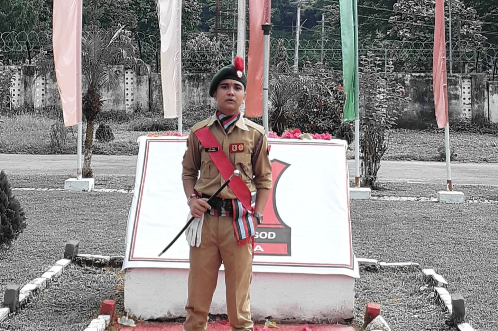
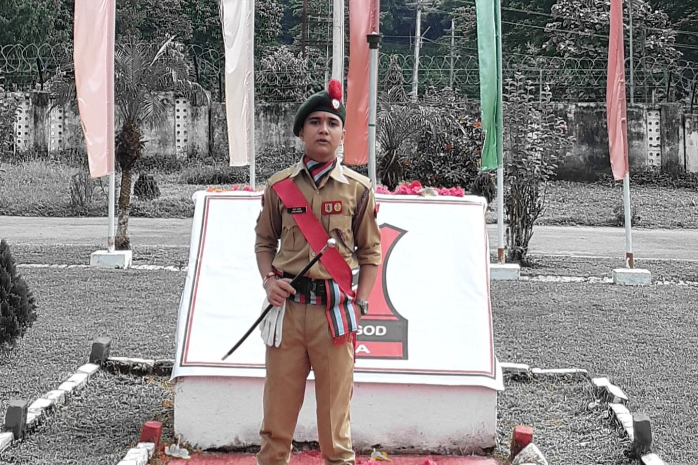
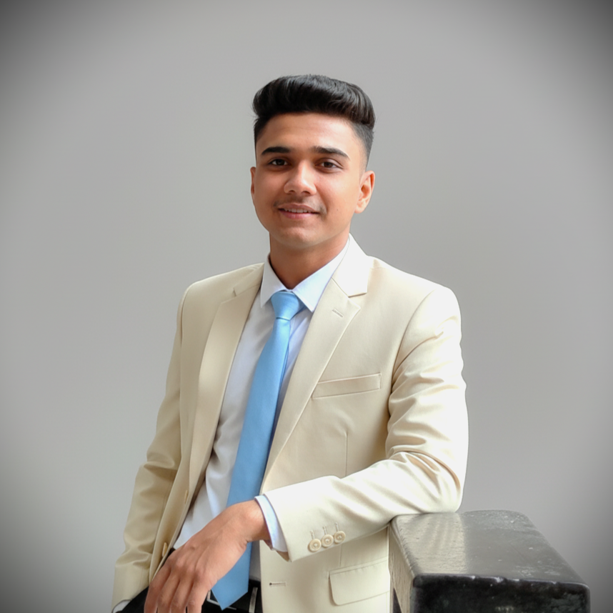
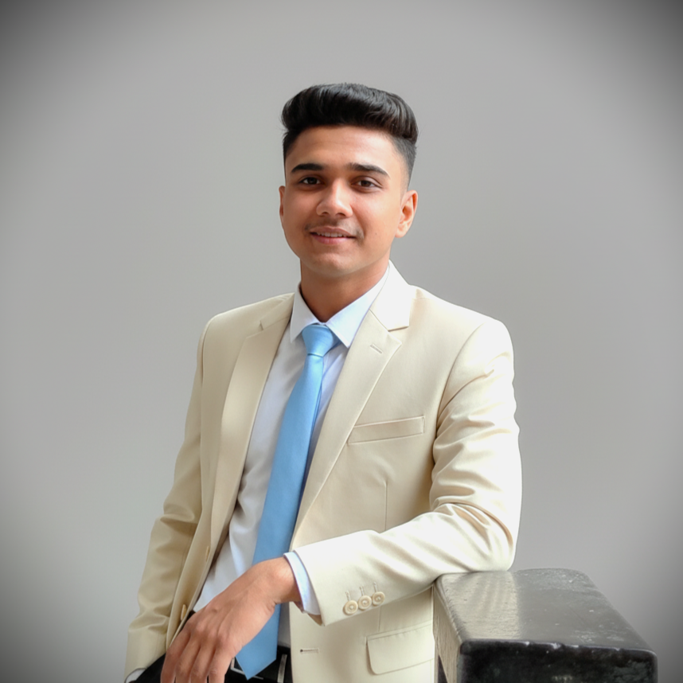
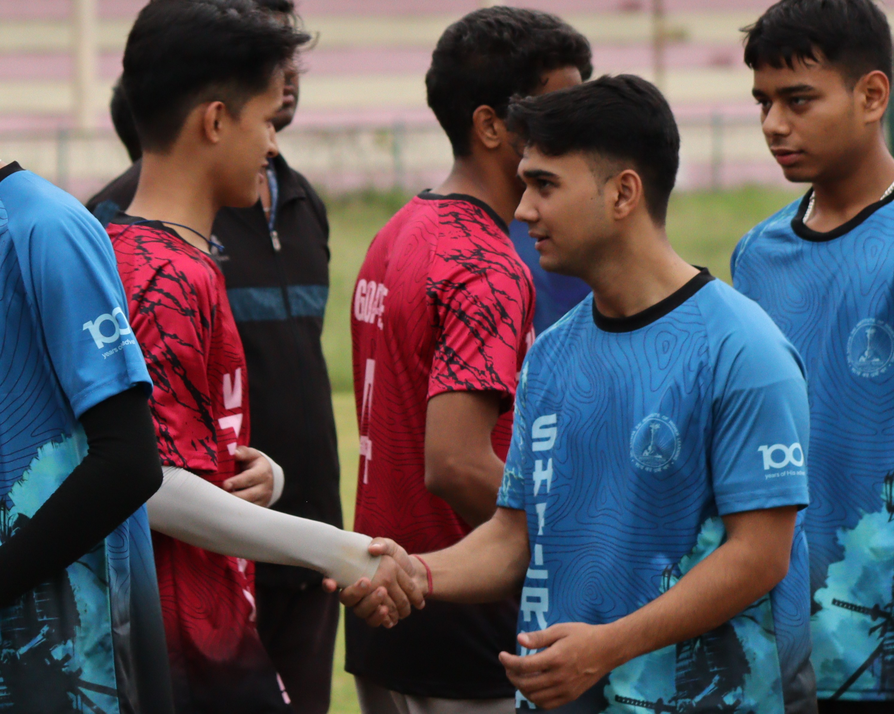
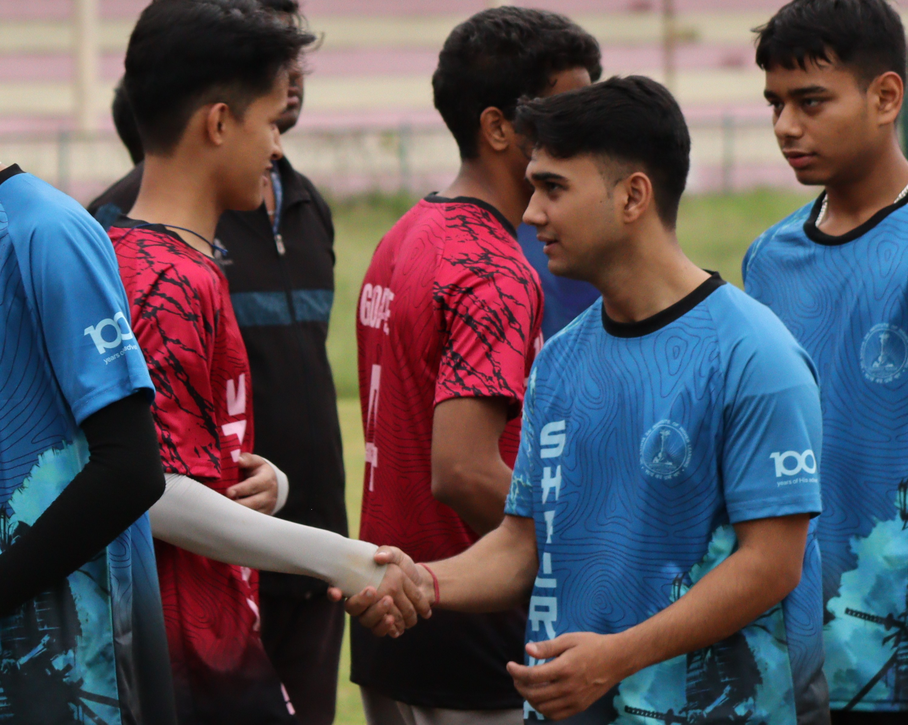
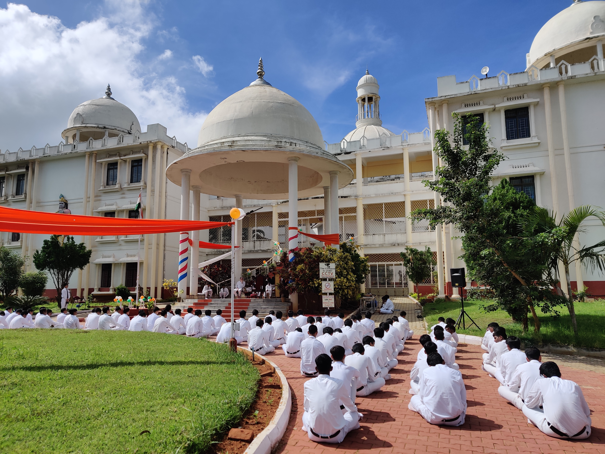
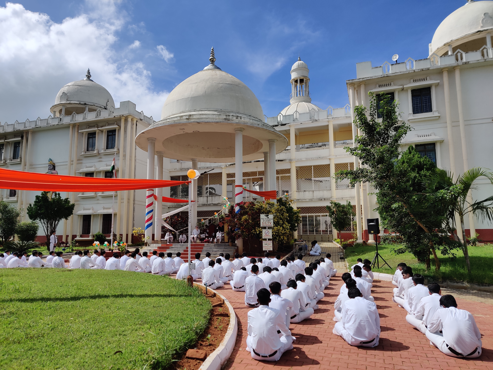

Hey, I’m Aryan.
I work at the intersection of theory and real-world systems, turning mathematics into deployable intelligence.
|
I work at the intersection of theory and real-world systems, turning mathematics into deployable intelligence.

I’m a Computer Science undergraduate focused on Data Science, Artificial Intelligence, and cybersecurity, driven by curiosity and a strong preference for building real systems over just learning theory.
Currently pursuing my B.S. (Hons) in Computer Science at Sri Sathya Sai Institute of Higher Learning, my interests lie in developing intelligent, data-driven solutions and understanding how modern systems can be secured, optimized, and scaled.
I actively work on projects involving intrusion detection, health monitoring, optimization techniques, and predictive analytics, with the goal of creating practical, high-impact solutions that perform reliably in real-world environments.

Built an Intrusion Detection System using the NSL-KDD dataset. Implemented preprocessing, class balancing (SMOTE), feature selection, and XGBoost for multi-class attack detection. Deployed an interactive Streamlit dashboard for real-time prediction on raw network traffic data using CSV.

Implemented logistic regression from scratch using NumPy with L2 regularization and gradient descent. Validated on synthetic data and the Wisconsin Breast Cancer dataset. Includes convergence analysis, decision boundary visualization, and benchmarking against scikit-learn.

May 2025 – Jul 2025
Project: Speech Completion Prediction

Sept 2019 – Jun 2022
Served as a senior cadet in the 16 Bengal Battalion, Sukna, West Bengal. Actively participated in rigorous training programs covering weapon handling, tactical drills, disaster management, map reading, and leadership exercises. Led and coordinated squad-level activities, including physical fitness regimes, parade practice, and strategic planning exercises. Played a key role in mentoring junior cadets, fostering teamwork, discipline, and problem-solving skills. Participated in national-level camps, adventure training, and community service initiatives, strengthening both leadership and civic responsibility.

2010 – Present
Dedicated youth volunteer contributing to social welfare and community development programs under the Sri Sathya Sai Seva Organization. Engaged in organizing and participating in blood donation camps, environmental awareness drives, and educational initiatives for underprivileged children. Promoted values of selfless service, empathy, and discipline through active involvement in both local and regional service activities. Developed organizational and leadership skills while collaborating with fellow volunteers to execute impactful service projects for the community.

2023 – Present
Performing as a lead and bass guitarist in the campus music ensemble, contributing to cultural and spiritual programs within the institute. Composed and arranged musical pieces for inter-college events, devotional gatherings, and community celebrations. Collaborated with fellow musicians to create cohesive performances that enhance audience engagement and campus life. Developed stage presence, teamwork, and creative expression while balancing academic commitments, demonstrating dedication and versatility in extracurricular pursuits.
 B.S. (Hons) in Computer Science
B.S. (Hons) in Computer Science
 Schooling
Schooling
Minor & Specialization: Data Science & Artificial Intelligence
Pursuing a honours degree with a specialization in Data Science & Artificial Intelligence. Coursework and projects emphasize solid foundation in mathematics for AI & CS, operating system concepts, computer networks, machine learning, deep learning, time-series modelling, and applied systems engineering for real-world problems.
July 2023 – Present
Location: Sukna Military Station, West Bengal, India
Apr 2009 – Apr 2023


 

 



 


 

Description goes here.

aryanbhandari7478@gmail.com


+91 7478484491


Darjeeling, West Bengal, India - 734201